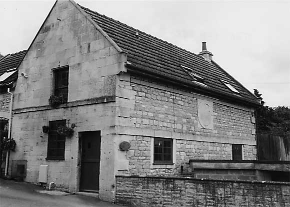

Type of building:
Detached former stables-coach house of a village house now converted into a dwelling
Listing:
Grade ll
Plan and elevation:
An original two storey, single pile, two unit building aligned approximately north-east
to south-west to which has been added a single unit, two storey south-west extension
at right angles to the main structure.
Summary of the probable main building
history:
Possible late 17th Century origins, remodelled mid 18th Century, some rebuilding,
alterations and additions about 1989

South-west elevation
Construction:
The south-west gable end containing the former stables entry is built of fine
jointed small ashlar off-cuts (range walling) at the ground floor level and more
conventional sized ashlar at the first floor level, the two levels being separated
by a plat band. The entry is protected by a split stables plank and braced door
with a shuttered and barred aperture in the upper door section. There is one ground
floor modern casement window. The first floor modern sash window is a conversion
from a former loading door. To the left, the late 20th Century extension is of
coursed rubble stone. The south-east long elevation is of coursed rubble stone
and has two casement windows with dressed stone surrounds and a plat band, heavier
and at a lower level than the plat band on the south-west elevation. Above this
heavier plat band and apparently straddling the ground and first floors there
is a circular pitching hole carved from freestone and filled with carefully cut
and fitted freestone blocks. It is unlikely that this pitching hole ever performed
a function other than a decorative feature visible from the road. This south-east
long elevation also has slightly projecting dressed stone quoins again visible
from the road. There is no entry in this elevation and no indication of any former
entry. The return north-east gable elevation is largely a modern rubble reconstruction
but there appears to be earlier fabric at lower levels. In the apex there is a
date stone “1989”. A dressed stone quoin to the right at a low level
is scratched “RB 1791 TCB” and on a stone below “182?”
(last number broken away). The north-west long elevation is largely masked by
the modern extension although there is a wide and high entry with modern glazed
double sliding doors giving access to the courtyard.
The roof is pitched, with the roof of the modern extension running at right angle to the roof of the older building, and tiled. All roof timbers are of modern softwood. There is one modern ashlar and rubble stone chimney stack on the north-east gable.
Internally, the building has been modernised and equipped for residential purposes. The staircase that previously accessed the upper floor has been removed and the space utilised for storage purposes. The first floor is now reached via a staircase in the new extension.
Date & development:
The substantial wall thickness would indicate an original 17th Century structure
which is in keeping with the survey findings for the house with which it is associated
(BE 029). Its function at that date can only be guessed at but presumably no different
from its usage by the mid 18th Century -stables and carriage house with
hay loft above- when it appears to have been remodelled at the same time as the
parent house. A plan of 1872 attached to the deeds for the main house shows the
surrounding walling of the property and indicates that the coach house was accessed
from the south-west, as it is today, through the stable door in the gable end;
the carriage entry was most probably in the north-west elevation, where the modern
glazed sliding doors have been inserted, with further access direct from there
to the main house. The plan shows the single pile organisation of the coach house.
However, the first edition 25” OS map (surveyed in 1883) shows additional
structures erected against the north-west wall where the modern extension now
stands. From the 1936 edition of the 25” OS map these structures appear
to have a horticultural purpose associated with the neighbouring nursery although
it is not known when ownership of the coach house was severed from the main house.
The 1989 extension now stands where these structures once stood. In this year
the coach house was converted for residential usage (the 1983 schedule of listed
buildings describes the house as “Now outbuilding and garage”; the
garage being referred to as a lean-to).
References:
- 25” Ordnance Survey Maps 1888 and 1936 editions
- Deeds attached to property ref. BE 029 in the owners possession
- List of Buildings of Special Architectural or Historic Interest, Dept. of the
Environment 1983
Reference Pictures
| Stable
door |
Scratched
dates and initials on the rear external wall |
Survey drawings
| Ground
Plan |
Section |